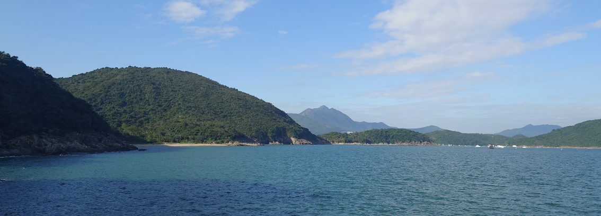

English / Japanese

(Hong Kong, 2022)
An ecologist working on ecosystem dynamics, nonlinear time-series analysis, environmental DNA, and microbial community. Currently focusing on ocean ecosystem.
Happy Lunar New Year!
A collaborative paper accepted!
Jiang L*, Ushio M, Kitayama K (accepted) Changes of soil chemical properties, microbial biomass and enzymatic activities along a gradient of forest degradation in logged over tropical rain forests, Borneo. Plant and Soil
A collaborative paper accepted!
Tsujii Y*, Sakai S, Ushio M, Aiba S-I, Kitayama K (accepted) Variations in the reproductive cycle of Bornean montane tree species along elevational gradients on ultrabasic and non-ultrabasic soils. Biotropica
Still working on many adminstrative documents...
Just appointed as an Assistant Professor at OCES, HKUST!